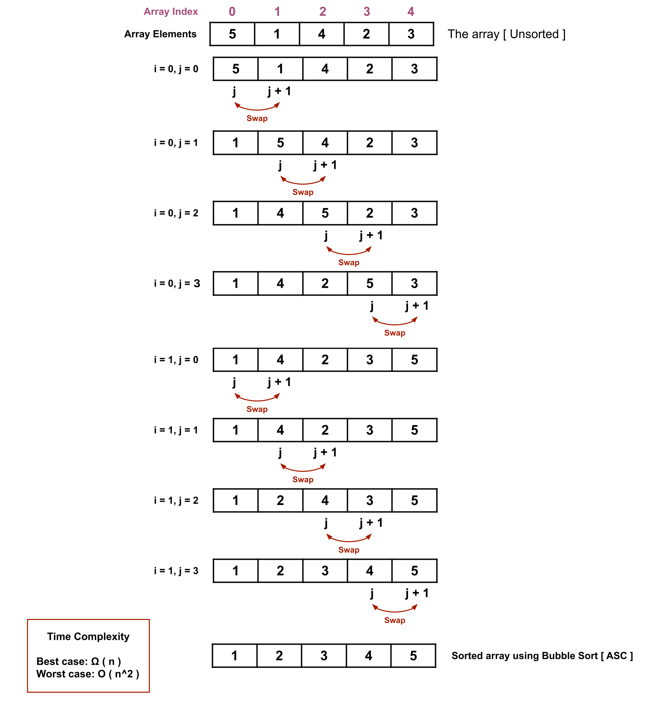

Ice Breaking Session
In the Ice Breaking Session, we discussed about the course overview and the basic concept of algorithm and algorithms. We discussed the approaches, recommendations, concepts of various algorithms. We also discussed the course recommendations that the viewers must have basic skill in C Programming Language and I provided the link of the C Programming Language full course from w3schools. It was just a ignition. The whole course is beyond this.
Lecture Video:
Download the lecture contents:
DownloadLinear Search Algorithm
Linear Search Algorithm, is a very simple search algorithm that linearly operates on the data structure. During the discussion first we discussed the characteristics of linear search, then we visualized the searching process and at last we implemented the algorithm in the compiler. The visualization of linear search algorithms is given bellow and the rest of the content is available at the bottom.
As we have to traverse the whole array so the time complexity will be the number of array elements, beacuse as the array element increases, the time to traverse the array will increase respectively.

This is the best case for linear search Algorithm. We got the target at the first place and process is done. So it doesn't matter how many elements the array have.
Lecture Video:
Download the lecture contents:
DownloadDownload Source Codes:
DownloadBinary Search Algorithm
Binary Search Algorithm, is the most optimal search algorithm that operates on the data structure by logarithm basis. Each time the loop turns, the array is divided to subarrays according to the relation between target element and the middle element of the array. During the discussion first we discussed the characteristics of binary search, then we visualized the searching process and at last we implemented the algorithm in the compiler. The visualization of binary search algorithms is given bellow and the rest of the content is available at the bottom.
.png)
As we have to traverse the whole array so the time complexity will be log( n ). Firstly how many elements are there and either the array is sorted or not. Then we have to calculate that how many times we can devide the numberby 2. Then we have to do logarithm logic to execute the complexity. Such as, an array with 1024 elements. pow(2, 10) is equal to 1024. So, log(1024) is equal to 10. Then the time complexity is O(log(1024)).
.png)
This is the best case for binary search Algorithm. We got the target at the middle place and process is done. So it doesn't matter how many elements the array have.
Binary Search VS Linear Search, Which is best?
When the array is sorted it better to use binary search algorithm. Suppose an array with 1024 elements, if we want to find an element, linear search will cost a complexity of 1024 where binary search manage up to 10. But for small unsorted or sorted array implementing binary search maybe be inappropriate and time consuming.
Lecture Video:
Download the lecture contents:
DownloadDownload Source Codes:
DownloadSelection Sort Algorithm
Selection Sort Algorithm, is one of the most populer sorting algorithms that operates on an unsorted data structure by swapping the smallest with the largest at each step. This is the very first sort algorithm that we discussed in our playlist. Selection Sort Algorithm takes same time complexity for both best and worst case. Only two algorithm does this, one is Selection Sort Algorithm and other one is due to be discussed, Merge Sort Algorithm. However, during this lecture we discussed the procedure, working process and implementation of Selection Sort Algorithm. The visual of this algorithm is as shown bellow and the lecture contents are being provided in the bottom.

Both the outer and inner loops traverse the array or any data structure, even though the array or data structure is sorted. The comparison of which sotring algorithm is best will be discussed when the sorting lectures are finished.
Lecture Video:
Download the lecture contents:
DownloadDownload Source Codes:
DownloadBubble Sort Algorithm
Bubble Sort Algorithm, is another most populer sorting algorithms that operates on an unsorted data structure by swapping two elements form the beggining at each step. Bubble Sort Algorithm has a similarity with Selection Sort Algorithm that both algorithm operates on the data structure linearly. In this lecture we discussed the theory, visualization, and the code implementation. All the contents are available through the buttons below and the visualization is given just after this discussion.
Point to be noted that after each round at least one element of the data structure is sorted and that is the biggest element if we are sorting in ascending order.
Lecture Video:
Download the lecture contents:
DownloadDownload Source Codes:
DownloadInsertion Sort Algorithm
In this lecture, we discussed the Insertion Sort Algorithm. The insertion sort algorithm acts linearly on the data structure like bubble and selection sort as we discussed in the previous lectures. But a difference between these algorithms and insertion sort algorithm is, insertion sort algorithm requires two variable to traverse the data structure and the outter loop executes respected variable as leading variable and the inner loop executes as lagging variable. Insertion sort algorithm is widely implemented in proofessional of real-life projects compare to bubble sort algorithm or selection sort algorithm.Before code implementation, we must know the visualization of the algorithm. Here we discussed the algorithm in three parts. First, we discussed the theory of the bubble sort algorithm then we discussed the visualization and last we implemented the algorithm in a compiler using the C programming language. The visualization is given just after this description and the lecture contents are available at the bottom of this lecture.

During the procedure of inner loop, the temp or selected element is being temporarily removed and compared with the lower index elements. After the inner loop stops, the selected element sets in the calculated index.